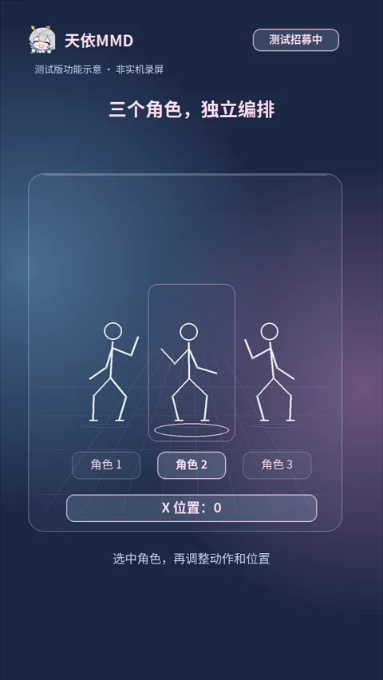
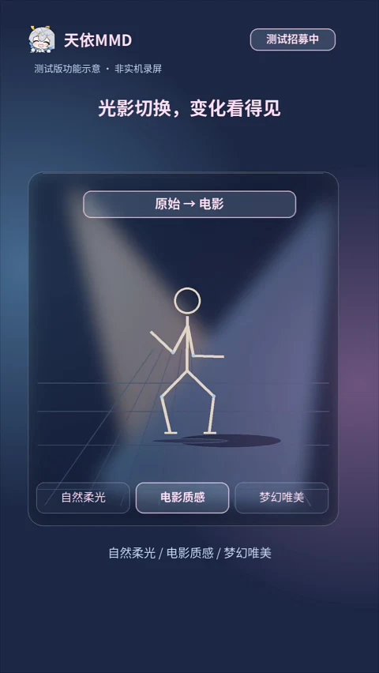

01 / 角色与动作让角色和动作，
让角色和动作，
在这里相遇。
视频把流程分成三步：导入角色、绑定动作、开始舞蹈。先完成一次简单创作，再继续尝试编排。
天依 MMD
导入角色、绑定动作，编排你的多角色舞台。
在手机上调整光影与镜头，
也能把项目交给 Windows 继续创作。
功能已由项目方确认可用；视频为示意动画，非实机录屏。


从介绍视频，认识天依 MMD
让角色先动起来，再慢慢调整到喜欢的样子。
从动作、编排到光影，把创作一步步展开。
视频把流程分成三步：导入角色、绑定动作、开始舞蹈。先完成一次简单创作，再继续尝试编排。
三个角色分别选择，独立调整动作与位置。视频展示了角色切换和 X 位置变化。
自然柔光、电影质感、梦幻唯美。可以在三种风格之间切换，为同一个动作调整氛围。
图像为介绍动画截帧，不代表已验证的渲染效果。
用“让镜头推进一点”描述想法，让 AI 协助调整镜头。需配置 API，相关服务可能收费。
视频介绍项目文件接力、继续编辑和导出预览，并展示 16:9、9:16、1:1 三种画幅。
先看，再开始
这是项目提供的完整介绍视频。
想先了解哪一部分，就从那里开始。
视频已压缩，点击后才加载。保留原音轨，不会自动播放。
视频明确标注：测试版功能示意 · 非实机录屏。
把细节，停下来看看
点击放大原帧。这里是介绍视频截图，
这些介绍画面不是 APK 的实机截图。
写给第一次接触 MMD 的你
按介绍视频整理的入门路径。
视频所示功能已由项目方确认可用；详细菜单和素材格式将在版本说明中补充。
角色决定谁来登场，动作决定如何运动。先从一个角色、一段动作的组合开始理解。
视频演示了选中不同角色、调整动作和 X 位置。先把每个角色的位置想清楚，再安排同台。
从三种光影示意里选择想表达的氛围。AI 镜头调整是可选方向，不是开始创作的前提。
视频介绍了横屏 16:9、竖屏 9:16 和方形 1:1。项目文件、导出参数等细节，以发布版本的操作说明为准。
文件只在浏览器中计算，不会上传。
整理介绍视频、原始画面和测试联系。项目方已确认视频所示功能可用；公开 APK、版本号和完整发布说明尚未提供。
你可能想先知道
没有确认的事，我们会直接说明。
目前尚未提供可公开下载的 APK，因此下载区显示“即将开放下载”。正式发布后会补上版本号、大小、更新日期、更新内容和 SHA-256 校验值。
不是。原视频明确标注“测试版功能示意 · 非实机录屏”。官网展示的是这段视频的原帧，用于说明创作思路，视频中的功能已由项目方确认可用；这些示意图仍不等同于实机效果与性能测试。
视频未给出文件格式、最低安卓版本、设备要求或性能指标。这些内容仍待确认，不建议在没有版本说明时据此准备特定格式的素材。
视频将 AI 标为可选能力，并提示“需配置 API，服务可能收费”。项目方已确认该功能可用；具体 API 接入、计费方式与服务条款，以后续版本说明为准。
视频介绍的是项目文件接力、继续编辑和导出预览，没有展示实时同步或云同步。项目方已确认跨端能力可用；配套 Windows 程序、项目格式与传输步骤将在版本说明中补充。
项目的既定方向是免费 MMD 功能允许免登录，会员功能需登录并在线验证。服务器会员系统与安卓软件的实际对接尚未验收，本官网不提供账号登录或购买入口，也不公布尚未确认的价格。
官网按独立静态站点制作，计划通过 GitHub Pages 提供页面和演示素材，不依赖项目手机服务器持续在线。后续账号和会员查询会与静态介绍分开接入。
视频提供的测试联系是 QQ 3256364096，申请时备注“天依MMD测试”。反馈时可以说明手机型号、安卓版本、使用的素材和复现步骤，避免发送密码、验证码或个人敏感资料。
开发者与测试联系
视频署名：歪头美啦
欢迎第一次接触 MMD 的你，也欢迎带着具体问题来交流。
申请备注：天依MMD测试